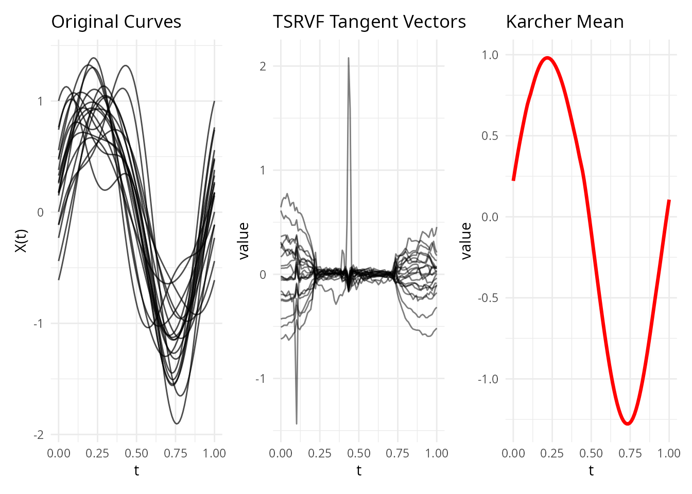
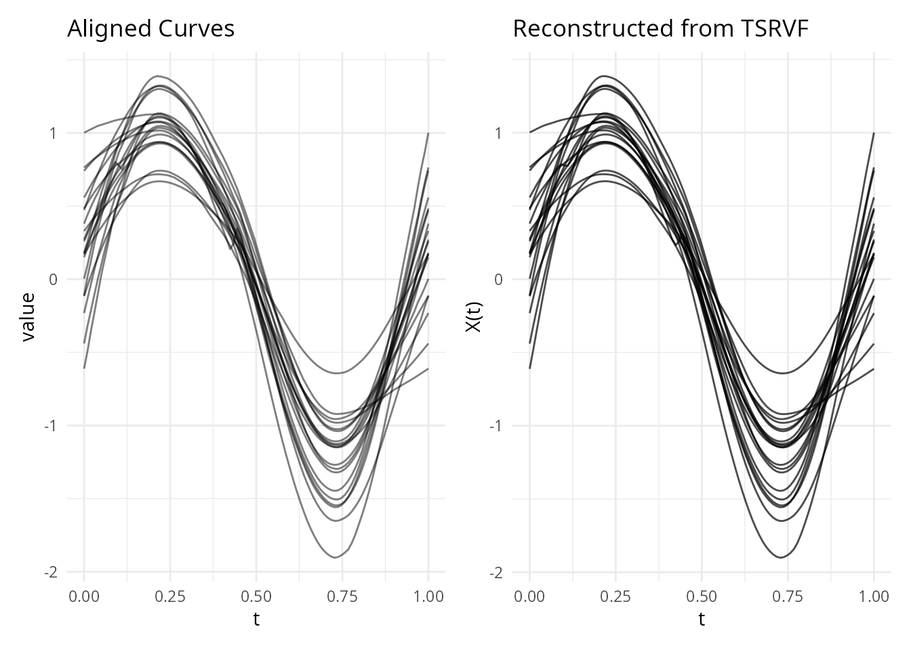
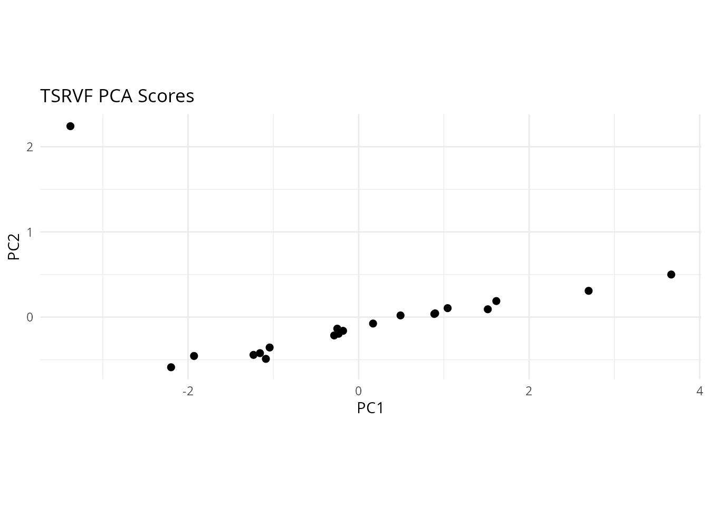
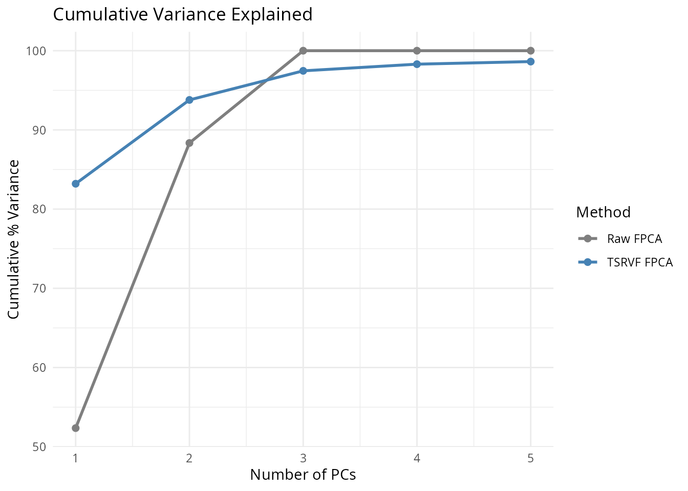

Introduction
After elastic alignment, the aligned curves live on a nonlinear manifold – the quotient space of functions modulo reparameterization. Standard linear operations (PCA, regression, hypothesis testing) are not directly valid on this curved space.
The Transported Square-Root Velocity Function (TSRVF) solves this by mapping aligned curves to a tangent space at the Karcher mean, where the geometry is locally Euclidean. In this tangent space, standard multivariate methods apply directly, giving a rigorous framework for elastic functional data analysis.
How It Works (Intuition)
After elastic alignment, curve shapes live on a curved surface (a manifold) – think of points on the surface of a globe. Standard statistical methods like PCA assume data lives in a flat space (like a map), so applying them directly to aligned curves introduces distortion.
The TSRVF solves this by projecting curves onto a flat tangent plane at the mean shape – like laying a flat map tangent to the globe at one point. Near the point of contact, the map is a good approximation of the globe’s surface.
Each curve becomes a tangent vector – a direction and magnitude showing how that curve’s shape differs from the mean. These tangent vectors live in ordinary Euclidean space, so you can:
- Run PCA to find the main modes of shape variation
- Use regression with tangent vectors as predictors
- Apply any clustering or classification method that works with vectors
The projection is invertible: you can go from tangent vectors back to curves (by “projecting back onto the globe”), so you can reconstruct curves from their PC scores or model predictions.
Mathematical Framework
The Shape Space
Let denote the space of absolutely continuous functions , and let be the warping group of orientation-preserving diffeomorphisms of . The shape space is the quotient:
where two functions are equivalent if for some . Points in represent curve shapes, stripped of parameterization effects.
Via the SRSF transform , the shape space is isometric to the quotient of the unit Hilbert sphere by . This is a nonlinear manifold with nontrivial curvature.
Exponential and Logarithmic Maps
At a point on the shape space (represented by the Karcher mean), the tangent space is a flat (Euclidean) vector space. The exponential map projects from the tangent space onto the manifold, and the logarithmic map does the reverse:
These tangent vectors are the TSRVF representation. They capture how each curve’s shape differs from the mean, in a coordinate system where Euclidean distances approximate geodesic distances on the manifold.
The TSRVF Transform
Given aligned SRSFs and the mean SRSF (the Karcher mean in SRSF space), the TSRVF of the -th curve is computed via the inverse exponential map on the sphere:
where is the geodesic distance between and on the sphere.
Key properties:
- : the tangent vectors are orthogonal to , i.e.,
- Euclidean distances approximate geodesic distances: for curves near the mean
- Linear operations are valid: addition, scalar multiplication, inner products in the tangent space have geometric meaning
Quick Start
set.seed(42)
argvals <- seq(0, 1, length.out = 100)
# Simulate curves with amplitude and phase variation
n <- 20
data <- matrix(0, n, 100)
for (i in 1:n) {
amp <- rnorm(1, 1, 0.2)
shift <- runif(1, -0.08, 0.08)
data[i, ] <- amp * sin(2 * pi * (argvals - shift)) +
0.3 * rnorm(1) * cos(4 * pi * argvals)
}
fd <- fdata(data, argvals = argvals)
# Compute TSRVF
tv <- tsrvf.transform(fd, max.iter = 15, tol = 1e-4)
print(tv)
#> TSRVF (Transported SRSF)
#> Curves: 20 x 100 grid points
#> Converged: TRUE
p1 <- plot(fd) + labs(title = "Original Curves")
p2 <- plot(tv, type = "tangent") + labs(title = "TSRVF Tangent Vectors")
p3 <- plot(tv, type = "mean")
p1 + p2 + p3
The tangent vectors represent each curve’s shape deviation from the mean in a Euclidean space – ready for PCA, regression, or any linear method.
From a Pre-Computed Alignment
If you have already computed a Karcher mean (which is the expensive step), you can obtain the TSRVF without re-running the alignment:
km <- karcher.mean(fd, max.iter = 15)
tv_from <- tsrvf.from.alignment(km)
# Same tangent space, no extra alignment cost
cat("Dimensions:", nrow(tv_from$tangent_vectors$data), "x",
ncol(tv_from$tangent_vectors$data), "\n")
#> Dimensions: 20 x 100Inverse Transform
The TSRVF is invertible – you can reconstruct (aligned) curves from their tangent vectors:
recon <- tsrvf.inverse(tv)
# Compare original aligned curves to reconstruction
p1 <- plot(km, type = "aligned") + labs(title = "Aligned Curves")
p2 <- plot(recon) + labs(title = "Reconstructed from TSRVF")
p1 + p2
TSRVF-Based PCA
The main application of TSRVF is enabling standard PCA in the tangent space. This gives elastic FPCA – principal components that respect the geometry of the shape space.
# Standard PCA on tangent vectors
tv_data <- tv$tangent_vectors$data
pca_result <- prcomp(tv_data, center = TRUE, scale. = FALSE)
# Variance explained
var_explained <- pca_result$sdev^2 / sum(pca_result$sdev^2)
cat("Variance explained by first 3 PCs:",
round(cumsum(var_explained)[1:3] * 100, 1), "%\n")
#> Variance explained by first 3 PCs: 83.2 93.8 97.5 %
scores <- pca_result$x[, 1:2]
df_scores <- data.frame(PC1 = scores[, 1], PC2 = scores[, 2])
ggplot(df_scores, aes(x = PC1, y = PC2)) +
geom_point(size = 2) +
labs(title = "TSRVF PCA Scores", x = "PC1", y = "PC2") +
coord_equal()
Comparison: Raw FPCA vs TSRVF FPCA
Standard FPCA on the raw (unaligned) data confounds amplitude and phase variation. TSRVF FPCA operates on aligned shapes, so the principal components capture only amplitude variation:
# Raw FPCA
raw_pca <- prcomp(fd$data, center = TRUE, scale. = FALSE)
raw_var <- raw_pca$sdev^2 / sum(raw_pca$sdev^2)
# TSRVF FPCA
tsrvf_var <- var_explained
df_var <- data.frame(
PC = rep(1:5, 2),
Variance = c(cumsum(raw_var[1:5]), cumsum(tsrvf_var[1:5])) * 100,
Method = rep(c("Raw FPCA", "TSRVF FPCA"), each = 5)
)
ggplot(df_var, aes(x = PC, y = Variance, color = Method)) +
geom_line(linewidth = 1) +
geom_point(size = 2) +
labs(title = "Cumulative Variance Explained",
x = "Number of PCs", y = "Cumulative % Variance") +
scale_color_manual(values = c("Raw FPCA" = "grey50", "TSRVF FPCA" = "steelblue"))
TSRVF FPCA typically needs fewer components because it has already removed phase variation – the remaining amplitude variation is lower-dimensional.
When to Use TSRVF
| Scenario | Recommended approach |
|---|---|
| Exploratory alignment & visualization |
karcher.mean() / elastic.align()
|
| PCA on aligned data |
tsrvf.transform() + prcomp()
|
| Regression with aligned predictors |
tsrvf.transform() + standard regression |
| Clustering aligned curves |
tsrvf.transform() + any Euclidean clustering |
| Classification | TSRVF scores as features |
The key insight: TSRVF converts a nonlinear shape analysis problem into a standard multivariate statistics problem, at the cost of a one-time alignment step.
See Also
-
vignette("elastic-alignment", package = "fdars")– the underlying alignment framework -
karcher.mean()– compute the Karcher mean (prerequisite for TSRVF) -
alignment.quality()– diagnostics for the alignment step